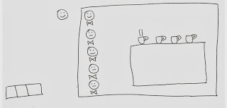
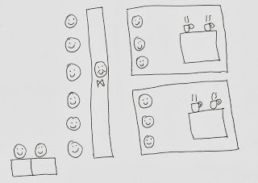
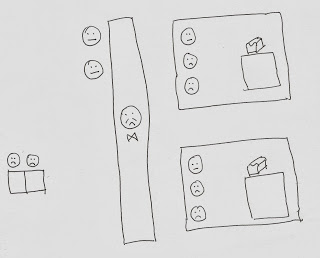
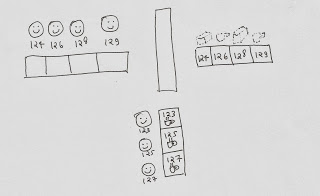

看咖啡店如何做扩容
这是一篇译文，文章使用一个经营咖啡店的例子来讲解 Web 应用扩容会经历的几个阶段，很有意思，通俗易懂。
我有一个小咖啡店。
店铺的开销和资源成正比：
100平方英尺的店铺面积和公用设施，一个服务员，一台咖啡机。
店铺的容量：
同一时间只能服务一个顾客，花 3 分钟出咖啡，服务完一个顾客总共会花 5 分钟。
假设服务员从来不休息，而且这台德国造的咖啡机不出问题，这个咖啡店的最大吞吐量是：12 个顾客 / 小时。

Web 服务器
同一时间只能服务一个客户，所以顾客会在高峰时期离开，这里也没有地方让人等。
我把店铺升级了，新店铺看起更好。
现在的开销：
同样的店铺面积，3 个服务员，2 个咖啡制造机，2 把椅子。
现在店铺的容量：
3 分钟可以出 2 杯咖啡，7 分钟内可以服务 3 个顾客，还可以让 2 个顾客坐在椅子上排队等候。
店铺的并发顾客数 = 3
店铺的顾客容量 = 5
垂直扩容
业务正在爆炸式增长，又该升级了，更大点会更好。
现在的开销：
200 平方英尺的区域，5 个服务员，4 台咖啡机，3 把椅子。
店铺的容量在线性增长，情况很好。
但是到夏天时，客流量下降了，这对于咖啡店来说很正常，所以我又想把店铺的规模缩小，但是我的房东却不允许我那么做。
垂直扩容对我这个客流量不稳定的店来说太贵了，大规模不一定好。

通过负载均衡器来水平扩容
房东愿意按照固定的区域（容纳 3 个服务员）来扩大或者缩小，如果我提前告知的话，他可以很轻松的打开或者关闭一个摊位。
如果我可以通过一个店面来同时管理多个摊位。
还真有这么一种柜台（负载均衡器）就是专门用来应对这种情况的。
它允许多个顾客同时与一个服务员交谈，实际上面对顾客的这个雇员不需要去制作咖啡了，只需要与顾客交谈并且将订单分发给制作咖啡的人。并且制作咖啡的人也不用来面对这些讨厌的顾客了。
这样做的优点是：如果我需要扩大规模，我可以直接添加一个可以容纳三个服务员的区域（和房东达成的协议），然后把这个区域和柜台连接起来，反之也可以用这种方式来缩小规模。
虽然费用增加了，但我也能更好地处理店铺的容量。我可以进行水平的扩容和缩容。

资源集中处理
我的咖啡机还可以用来处理制作食物，许多顾客告诉我他们想要买新鲜的烘焙面包，我就这个添加到菜单了。
但是有一个问题，一次能制作 2 杯咖啡的机器只能制作 1 磅面包，而且还要花两倍的时间。
在单位时间内，
生产 1 磅面包 = 制作 4 杯咖啡
有时候面包订单已经阻塞我的系统了，点咖啡的人也在不满的等待着，关于我工作低效的言论已经开始扩散开了。
我需要利用现有的资源来优化订单的处理方式

基于异步队列的处理方式
我引入了一个基于令牌的队列系统。
顾客进入到店之后，提交订单，然后拿一个令牌号码在等待。
这个订单按照类型进入不同的队列：面包或是咖啡。
服务员通过队列来决定他们接下来是烘焙面包还是制作咖啡。
当一份面包或者一杯咖啡就绪之后，就会被放到一个输出托盘上，处理订单的服务原就会喊出令牌号码，顾客就可以取走面包或咖啡。
- 输入队列和输出托盘是新加入的，其他的资源都是现成的，只不过在用不同的方式在工作
- 从顾客的视角来说，现在是完全不同的了
- 店铺开销和容量的计算已经很复杂了，整个系统的复杂度也在上升，如果出现问题，就很难进行排查和修复问题
- 如果顾客接受了这种异步系统，那我们就可以管理这种复杂性了，它提供了一种方式来扩打容量和生产不同种类的产品，我可以用这种方式来吓一吓我们对面的竞争者了

后续
我们已经达到了 Web 服务器的极限了，负载均衡，异步队列系统都用上。然后还可以做什么？
在后续阶段，用咖啡店来做比喻已经完全站不住脚了。如果你想了解更多，可以去搜索 DNS 负载和其他的扩容技术。如果你是 Web 应用扩容的新手，使用这篇文章中提到的技术就够了。咖啡店运营是一个经过简化的例子，以便激发读者对 Web 应用扩容的兴趣。如果你想深入学习，可以修改这个系统，然后与专业的人进行深入的讨论。